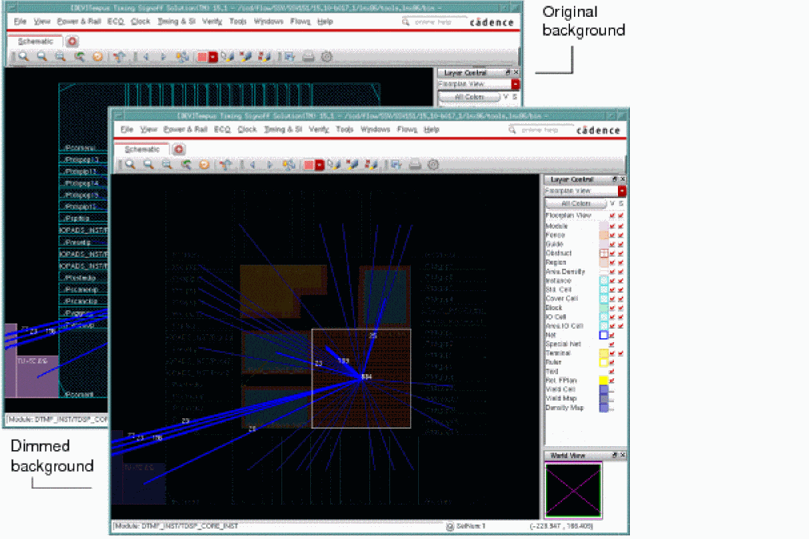

Dim Background
Use the View - Dim Background menu command to dim the background of the Tempus display. This enhancement helps you view selected and highlighted objects more clearly. This is especially useful when you are debugging.
The equivalent key is F12. The F12 key is used as a three-way toggle; so if you want to quit dim mode, press the F12 key again twice.

Return to top